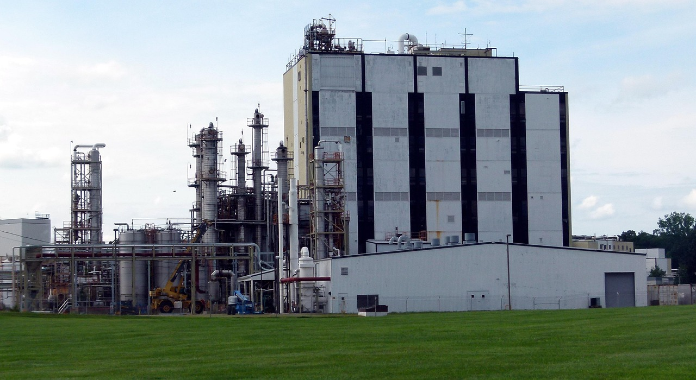

EIB·IDC, 아프리카 광물 가공 금융

남아프리카공화국은 2025년 수립한 핵심광물 전략에서 광산 가까이에서 원료를 가공하고 국내 제조업과 수출 기반을 넓히겠다는 방향을 제시했다. 마이닝닷컴(Mining.com)이 11월 27일 전한 유럽투자은행(EIB)과 남아공 산업개발공사(IDC)의 공동 금융 협약은 이 같은 산업화 구상과 맞닿아 있다. 두 기관은 전날 협약을 발표하며 아프리카의 광물 개발을 현지 생산 역량 강화와 유럽의 공급선 다변화로 이어가겠다는 취지를 밝혔다.
이번 금융의 지원 여부를 가르는 기준에는 사업 위치뿐 아니라 산업적 연계성도 포함된다. EIB는 남아공 및 사하라 이남 아프리카에서 추진되는 사업 가운데 현지 산업 육성에 보탬이 되고 유럽의 가치사슬과 뚜렷한 연결 관계를 갖춘 사업을 대상으로 삼았다. 국제적인 환경·사회 기준 역시 충족해야 한다. 아프리카에 남는 부가가치를 늘리는 일과 유럽의 조달처를 다변화하는 일을 함께 추진하는 방식이다.
두 기관이 함께 공급하기로 한 금융은 최대 3억 유로다. EIB가 이를 바탕으로 예상한 투자 총액은 약 9억 유로로, 직접 제공하는 자금 한도와는 구분된다. 발표에는 지원받을 업체의 이름이나 각 사업에 배정할 대출액이 담기지 않았다. 이 수치만으로 어느 광물의 생산이 얼마나 늘거나 특정 시설이 어느 규모로 들어설지 확정됐다고 볼 수는 없다.
금융을 투입할 수 있는 분야는 채굴뿐 아니라 가공·정련과 재활용, 대체 기술에 이른다. EIB는 이러한 활동에 필요한 에너지와 운송망, 디지털 인프라도 대상에 넣었다. 광산 또는 가공시설 자체에만 자금을 한정하지 않고, 뒤이은 처리 단계와 이를 가동하는 데 필요한 기반까지 포괄한 것이다. 자원 생산을 현지의 제조 활동으로 이어가려는 목적이 지원 범위에도 반영됐다.
IDC가 지목한 자원 개발의 주요 걸림돌은 경쟁력 있는 비용으로 장기 자금을 조달하기 어렵다는 점이다. 공사는 이번 금융으로 현지의 선광과 후속 가공 능력을 키우고 고용을 확대하는 한편, 다른 투자자의 사업 참여도 끌어내려 한다고 설명했다. 음마크고시 레케테(Mmakgoshi Lekhethe) IDC 최고경영자는 보유한 광물 자원을 공장, 기술, 일자리로 전환하는 것이 이 금융의 목적이라는 뜻을 전했다.
앞선 양측의 협력 합의도 이번 발표의 배경이다. 보도에 인용된 유럽이사회 자료를 보면, EU와 남아공은 2025년 11월 광물·금속의 지속가능한 가치사슬을 위한 협약을 체결했다. 당시 청정 무역·투자 합의도 함께 이뤄졌다. 광물 분야를 양측의 산업 관계와 투자 확대라는 더 큰 틀에 포함한 것으로, 이번 금융은 그 협력 방향을 개별 사업에 대한 자금 지원으로 옮기는 수단으로 제시됐다.
남아공의 2025년 전략은 광물 산지 주변의 가공시설 확대에 더해 전력과 인프라 투자, 현지 부가가치 향상을 뒷받침할 금융 수단을 강조한다. 연구개발, 인력 육성, 역내 협력 역시 주요 내용이다. 보도에 따르면 그 산업적 목표는 광물을 주로 국외로 보내 가공하는 데 의존하는 구조에서 벗어나 국내 제조 역량을 높이고 수출 품목의 폭을 넓혀, 광물 생산에서 얻는 가치를 더 많이 국내에 남기는 데 있다.
EIB는 2025년 출범시킨 전략 구상에 따라 EU 밖에서 핵심광물만을 위해 마련한 금융으로는 이번이 처음이라고 설명했다. 암브루아즈 파욜(Ambroise Fayolle) EIB 부총재는 전략광물 및 관련 산업에 대한 투자가 아프리카와 유럽 양쪽의 성장과 가치 창출, 공급망의 회복력 향상에 기여한다는 취지를 밝혔다. 다만 발표 단계에서 사업별 수혜 대상과 대출 세부 조건은 공개되지 않았으며, 실제 지원에는 현지 산업 발전과 유럽 가치사슬 연결이라는 요건이 적용된다.